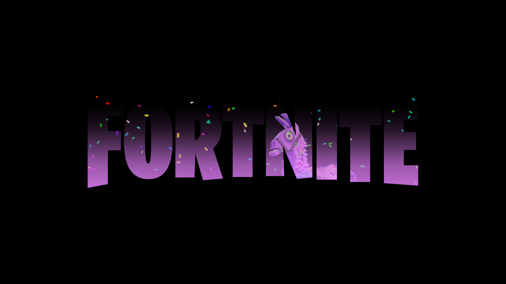
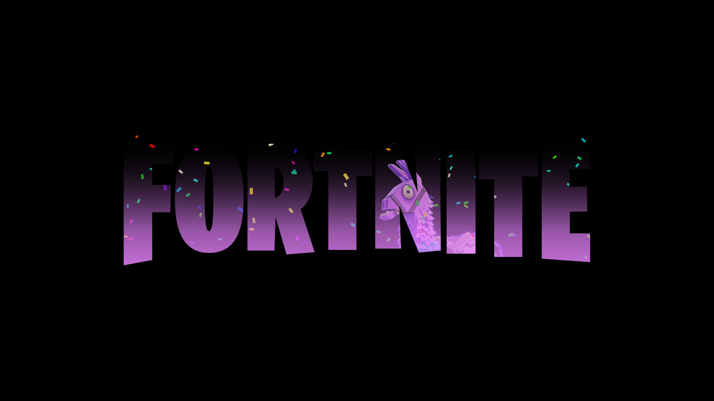

Overwatch is een game waar je 6 tegen 6 met verschillende klassen speelt zoals tank healer, offence en deffence. Je kan karakters spelen die verschillende speelstijlen belonen zoals je kan teleporteren om sneller aan te vallen en kan je iemand zijn die turrets bouwt achter in de map en zo kan je een schild zijn voor je hele team. Er zijn verschillende gamemodes waar verschillende karakters handig voor zijn zo moet je een wagen escorteren en moet je een zone verdedigen.
| Strat naam | hoe voer je hem uit | type strats |
|---|---|---|
| Attack is the best defense | Gebruik alleen maar aanval karakters als je verdedigd. | fun |
| Torb army | Iedereen moet torbjorn kiezen. | fun |
| Healthy | Je moet alle 6 een healer kiezen. | fun |
| OP Genji | 1 iemand speelt Genji en de andere 5 Mercy. | fun |
| President Bastion | 1 iemand kiest Bastion, 1 Mercy, 1 Reinhardt, 1 Orisa, 1 Winston en 1 Ana. | fun |
| Payload protection | Iedereen kiest Reinhard of Brigitte en verlaat de payload niet. | fun |
| Fangirls | Iedereen kiest Tracer of Widowmaker. | fun |
| Weebs | Kies genji, hanzo of d.va. | fun |
| Robots | Kies Orisa, Bastion of Zenyatta. | fun |
| Spiderman | Kies Genji, Hanzo of Widowmaker. | fun |